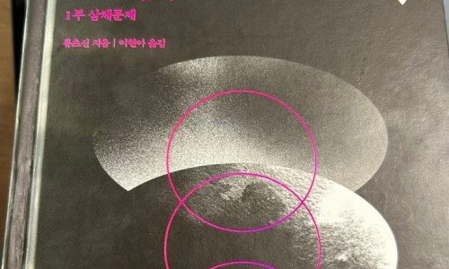
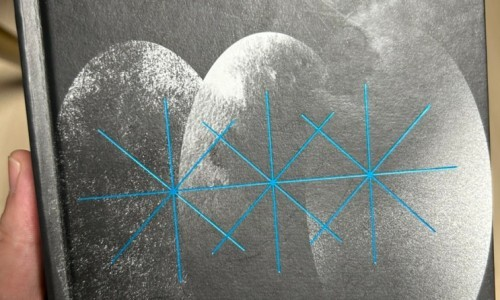
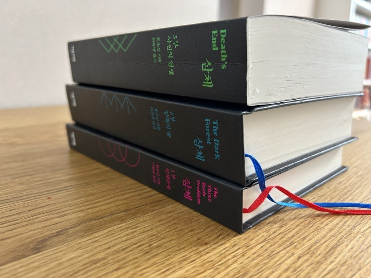
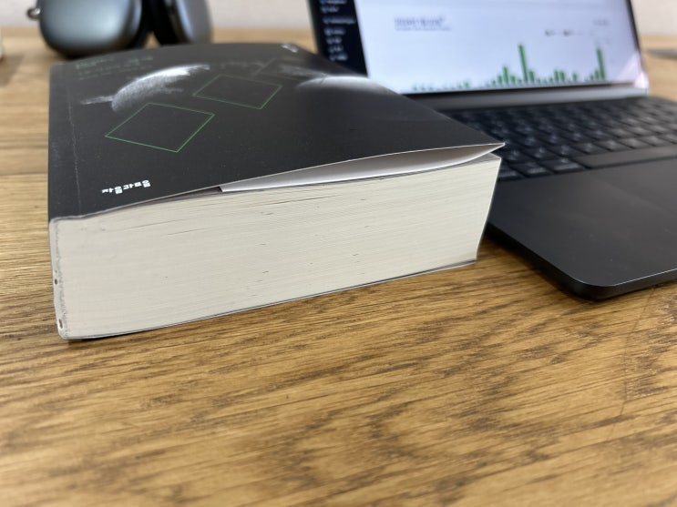
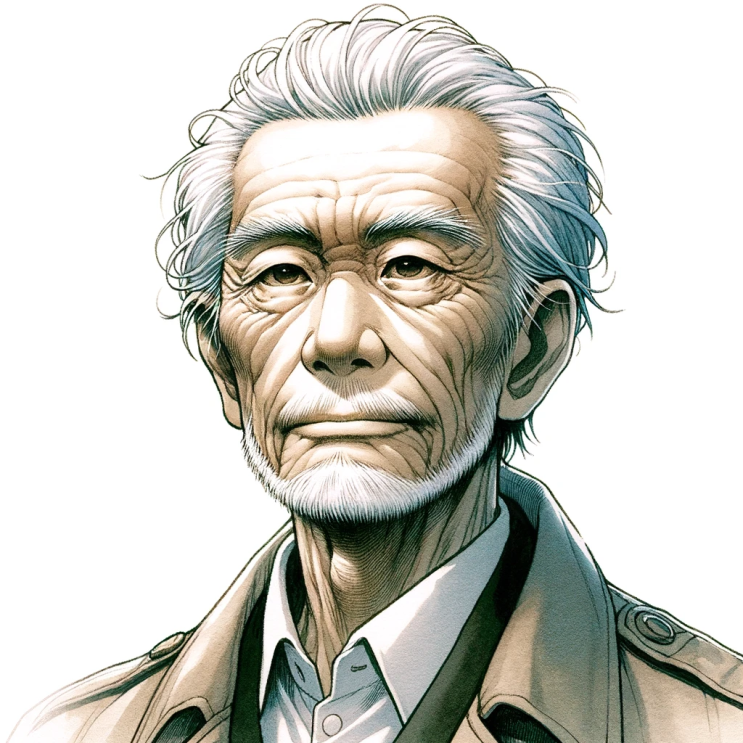

![[서평] 삼체3: 암흑의 숲 (류츠신) 이미지 1](../../assets/images/note-44/p257-01.jpg)

[서평] 삼체 1부 (류츠신) - 소장점수10/7점우리 문명은 이미 자신의 문제를 해결할 능력을 잃었습니다 이름만 들어보았던 삼체, 친구가 추천을 해서 ...

[서평] 삼체2: 암흑의 숲 (류츠신) - 소장점수10/7점드디어 '삼체 3편 : 사신의 영생' 까지 마무리 했다.
이번 3편은 기존 1~2 편 보다 훠어얼씬 두꺼워서 좀 빡셌고 초반엔 그래도 꽤 재미있는데 중반 쯤 갑자기 늘어지는 부분이 있어서 잠시 읽기를 그만 둔 적도 있었다.
하지만 이게 누군가. 류츠신 아닌가.
류스신의 필력은 비록 조금 떨어진다는 평가를 듣지만, 그래도 그의 상상력 만큼은 정말 위대하고, 이 거의 800페이지에 이르는 소설을 그 상상력 하나로 끝까지 하드하게 밀고 나간다. 역시, 얏바리 류츠신이라는 생각이 드는 류츠신의 대담한 상상력에 경의를 표한다.
그러나 이 상상력의 스케일이 너무 넓어지다 보니 점점 산만해지고, 인간에게는 신이라고 할 만한 우주에 있는 3차원 생명 체들의 생사여탈권을 쥐고 있는 존재인 '가수'의 이야기를 하는 장면에선 좀 너무 나갔다 싶을 정도로 상상력의 스케일이 커진다 (그 가수라는 존재가 그들/그녀들(?)의 사회에서는 청소부 정도의 최하층민이라는게 재미있다).
나는 개인적으로 1편이 실제와 허구를 잘 섞어놓은 탐정 소설 같은 매력이 있어서 재미있었고, 2편은 1편의 하나씩 풀어 나가는 나래비 식의 스토리텔링이 아닌 완전히 처음부터 꽉 짜여진 튼튼한 스토리와 반전이 어울어진 멋진 완성도가 마음에 들었다. 3편도 1/2편과 마찬가지로 그 압도적인 상상력에 경의를 표하지만 스토리는 좀 약한 편이었다. 그냥 그래도 인류가 어찌 되는지 궁금해서, 이 우주가 어찌 되는지 궁금하긴 해서 꼭 봐야 겠다 싶어서 끝까지 드라마 챙겨본 느낌? 약간 그런 느낌으로 '의리'로 보았다.


(좌) 삼체 1/2/3 권의 두께 비교 (우) 삼체 3권만 노트북 하고 비교해본 모습 서평의 마무리는 주요 주인공들의 이미지를 만든 것으로 대신해 봅니다.
지자?
인류에게 삼체인의 대리인으로 활동한 토모코??일때의 모습
청신 제 2대 검잡이

뤄지 (명왕성에서의 모습) 제 1대 검잡이
청신에게 선물한 별을 바라보고 있는 원텐밍